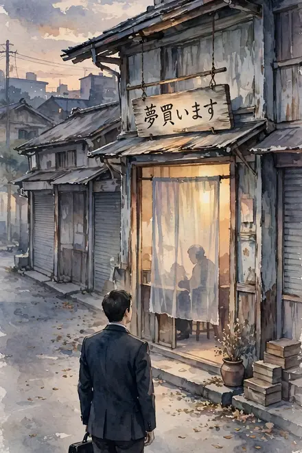

中編・全9章・完結
夢買います
現代ファンタジー ・ 約5,711字
出張先のさびれた商店街で、会社員・明石秀夫は「夢買います」という看板の店を見つける。人の夢を金で買い取る店。自分の15年物の夢に値段がついた時、秀夫は――。
第一章 看板
明石秀夫、三十三歳。会社員。
若い頃は野球部だった。甲子園を目指した。将来はプロ野球選手になるつもりだった。本気でそう思っていた時期が、確かにあった。
その夢は、高校三年で終わった。秀夫は就職して、営業に配属されて、気づけば十五年が経っていた。
今は、会社の歯車である。上司に怒られ、数字に追われ、終電で帰る。それでも辞めないのは、他に行き場がないからだった。
その出張は、一週間だった。
地方の取引先に通う仕事で、ホテルは駅前のビジネスホテル、現場まではバスで二十分。初日の仕事を終えて、夕方、ホテルへ戻る道を少し遠回りした。さびれた商店街があった。シャッターの閉まった店が目立つ中で、ところどころ、まだ灯りのついた店がある。
その看板は、通りの真ん中あたりにあった。
「夢買います」
手書きの文字だった。看板の下に小さな店構えがあり、ガラス戸には薄いカーテンがかかっている。中はよく見えない。秀夫は立ち止まって、しばらくその看板を見上げた。
夢を、買う。
何の店だ。占いか。新手の宗教か。それとも、ただの冗談の看板か。
カーテンの向こうに、人の影があった。七十代くらいの老人らしい。秀夫は少しだけ覗き込んで、結局、その日は通り過ぎた。気にはなった。でも、ホテルで缶ビールを飲んでいるうちに、看板のことは頭の隅に追いやられていた。
第二章 晴れやかな顔
次の日の終業後、秀夫は同じ商店街を通った。
例の店の前に差し掛かった時、自分と同じくらいの年の男が、店に入っていくのが見えた。スポーツマンらしい体格で、短い髪。何か思い詰めたような、深刻な表情をしていた。
秀夫の足は、自然に止まっていた。
カーテンの向こうで、老人と男が向かい合っているのが、影で分かる。会話は聞こえない。男は時々うつむき、老人は静かに頷いているようだった。
秀夫は店の前の電柱の陰で、待った。待つ理由は、自分でもよく分からなかった。
十五分ほどして、男が出てきた。頭を下げて、何度も礼を言っている。
その顔を見て、秀夫は息を呑んだ。
明るかった。入っていく時の、あの思い詰めた顔とは別人のように、晴れやかな顔だった。何か大きな荷物を下ろした人間の顔だった。
男は商店街を出て、裏通りの一軒の場末なBARに入った。秀夫は、気づけば後をつけていた。知らないふりをして、同じBARに入る。カウンターの端に座って、ビールを頼んだ。
男は常連らしかった。
「いらっしゃい、大ちゃん。久しぶり」
「色々、練習とか試合が重なってて」
マスターと男の他愛ない会話が、秀夫の耳に入ってくる。やがて男が言った。
「でも、すっきりしたよ。さっき売ってきたんだ。あの店で」
「へえ。本当に、それでいいのかい」
「悩んだけどね。決めたら早い方がいいって、店の人に言われて。夢は新鮮な方がいいらしいよ」
秀夫は、たまらず声をかけていた。偶然見てしまったこと、後をつけてしまったことを、正直に謝った。男は怒らなかった。照れくさそうに笑って、名乗った。山本大介、三十歳。地元の大手企業の実業団野球部にいるという。
「で、あの店で、何を売ったんですか」
「夢ですよ」
大介はあっさり言った。
「僕の夢。プロ野球選手になるっていう夢。今日、あの店で売りました。値段は、一千万円です」
秀夫は笑うこともできなかった。
「これでもう、僕はプロにはなれません。そういう取引なんです。でも、不思議とすっきりしてて」
「店は、買った夢をどうするんです」
「転売するんじゃないですか。夢が欲しい人は、世の中にいるみたいですよ。金はあるけど、夢がない人とか」
マスターが、当然のことのように頷いていた。この町の人間にとって、あの店は特別なものではないらしい。秀夫だけが、世界の秘密を聞かされた顔をしていた。
第三章 査定
三日目も、四日目の昼も、秀夫の頭から看板が離れなかった。
仕事の合間に考える。夢を売る。一千万円。プロになれる可能性を、金に換える。
大介の晴れやかな顔が、秀夫を苛立たせた。あんな顔を、自分はしたことがあるか。十五年間、夢を諦めたはずの自分は、では何を抱えて生きてきたのか。
四日目の終業後、秀夫は店の前に立っていた。
入るつもりはなかった。査定だけなら。査定だけ受けて、自分の夢の値段を聞いて、それで笑い話にして帰る。そう自分に言い聞かせて、ガラス戸を開けた。
「いらっしゃい」
老人は、カウンターの奥に座っていた。七十代半ば。痩せて、背筋の伸びた老人だった。店の中は薄暗く、棚には何も並んでいない。机と、椅子が二つと、古い金庫が一つあるだけだった。
「あの、看板を見て」
「査定ですか」
老人は、秀夫の頭からつま先までを、一通り見た。
「あんたの夢は、野球か」
秀夫は驚いた。老人は続けた。
「体の作りと、手だ。バットを振ってた手は、十五年経っても分かる」
老人は目を閉じて、しばらく黙っていた。それから、静かに言った。
「三百万円だ」
「……え」
「あんたの夢、プロ野球選手になる夢。買い取り価格は、三百万円」
秀夫は絶句した。二束三文だと思っていた。笑い話にするつもりだった。ところが、目の前の老人は、自分の十五年前の夢に、三百万円の値札を付けた。
「不思議か」
老人は言った。
「この前、実業団の青年が売っていった夢は、一千万円だった。あれは高かった。何故か分かるか。今まさに、追ってる最中の夢だからだ。毎日練習して、毎日その夢を育ててる。夢が一番生きてる時が、一番高い」
「……じゃあ、俺のは」
「あんたのは、追うのをやめて十五年経った夢だ。普通は、ここまで古くなれば値はつかん。可能性が消えてるからな。だが、あんたのは違う。十五年経っても、捨てきれてない。本気の未練が腐らず残ってる夢は、古くても値がつく。買い手も、そういう夢を欲しがる」
秀夫の喉が、からからに乾いた。
「即決しなくていい。出張の間だけ、この値段で置いておく。帰る日までに、決めなさい」
店を出た時、秀夫の足は震えていた。三百万円。自分の未練の値段が、三百万円だった。
第四章 足の早い夢
五日目、秀夫は昼休みに店の前まで行って、入らずに戻った。夕方、また行った。今度は入った。答えを出すためではなかった。ただ、店の中の空気を、もう一度確かめたかった。
先客がいた。
二十代後半の女性が、カウンターに座っていた。空港の免税店の制服だった。名札に「小野寺」とあった。
「査定、お願いします」
老人は目を閉じた。
「CAか」
女性が頷いた。
「あんたの夢は、足が早い」
老人は静かに言った。
「CAの夢は、年齢で値が落ちる。今なら、二百八十万円。あと二年もしたら、今の半分にもならん」
女性は、しばらく黙っていた。秀夫は息を殺して、その様子を見ていた。
「……売ります」
「いいのか」
「私、空港で働きながら、ずっと受け続けてきました。落ちるたびに、免税店のレジで笑うんです。もう、その繰り返しに疲れました」
老人は金庫を開けて、現金を数えた。契約書はなかった。女性は金を受け取って、深く頭を下げた。
店を出る時、女性は秀夫の横を通り過ぎた。その顔は、大介の晴れやかさとは違っていた。泣きも笑いもしない、静かな顔だった。何かが、すっと抜けた人の顔だった。
老人が、秀夫に言った。
「あんたは、帰る日までに決めるんだったな」
第五章 最後の夏
その夜、ホテルの部屋で、秀夫は十五年ぶりに、高校最後の夏を思い出していた。
県大会の決勝。勝てば、甲子園だった。相手は、毎年のように甲子園に出ている私立の強豪校だった。
秀夫はその年、県内では名前の知られた選手だった。スタンドには、大学のスカウトの姿もあった。
四回、秀夫は先制のタイムリーを打った。七回には、フェンス際の長打性の当たりを背走して捕った。ベンチが沸いた。あの日、秀夫は間違いなく、チームで一番いい動きをしていた。
一点リードの九回裏。二死一塁。打球は、平凡なショートゴロだった。
ショートの木村が、弾いた。
ボールは芝生を転がった。一塁ランナーは止まらなかった。二塁を回り、三塁を回り、ホームに滑り込んだ。同点。センターの秀夫は、その全部を、走りながら見ていた。
次の打者に、サヨナラタイムリーを打たれた。試合終了。秀夫の野球は、そこで終わった。
木村は、その場に崩れるように座り込んで、泣いた。帰りのバスで、秀夫は木村の隣に座った。「ドンマイ」。言えたのは、それだけだった。木村が悪いんじゃないことは、分かっていた。一つのエラーで負ける試合は、そもそも一点しか取れていない時点で、チーム全員の負けだった。
分かっていた。頭では、ちゃんと分かっていた。
でも卒業まで、秀夫は木村とまともに話せなかった。卒業してからも、一度も連絡を取っていない。秋に大学から野球の誘いが来た時、秀夫は断った。続けていたら、試合のたびに、あのボールの行方を思い出す気がした。
十五年経った今も、秀夫は時々、あの夢を見る。自分の打席の夢じゃない。木村のグラブを弾いて、芝生をどこまでも転がっていく、ボールの夢だった。
三百万円。あの試合に、三百万円の値が付いた。
売れば、この夢も見なくなるのだろう。すっきりするのだろう。大介のように、晴れやかな顔になるのだろう。
秀夫は缶ビールを空けて、天井を見た。
怖かった。安くて傷つく方が、よほど楽だった。高いから、怖かった。自分の未練が本物だと、他人に値札で証明されてしまったことが。
第六章 夢を買う男
六日目の夕方、秀夫は店の前を通りかかった。答えを出すのは明日だ。その前に、もう一度だけ店の空気を確かめたかった。戸を開けると、先客がいた。
四十代半ばの男が、カウンターに座っていた。くたびれたスーツで、膝の上に大きな紙袋を抱えている。
「プロ野球選手の夢が、あるって聞いたんですが」
男が言った。老人は棚の奥から、小さな木の箱を取り出した。
「この前、実業団の青年が売っていった夢だ。二千五百万円になる」
男は、値段を聞いても顔色を変えなかった。
「買います」
「高いぞ」
「息子にやるんです」
男は紙袋を抱え直した。病院の匂いのする袋だった。
「十一歳の息子が、白血病で入院してまして。幼い頃は野球少年で、プロ野球選手になるのが夢だったんです。でも今は治療で精一杯で、明日の検査のことで頭がいっぱいで。あの子の中から、夢が消えてしまった」
男の声が、少し震えた。
「夢でもあれば、病気と闘える気がするんです。治るって、信じられる気がするんです」
老人は、しばらく男を見ていた。
「他人の夢だぞ。根付くかどうかは、分からん」
「それでも、ないよりはいい」
老人は箱を開けた。中には何も入っていないように見えた。老人は言った。
「今夜、病室で息子さんの手を握ってやりなさい。夢は、手から移る」
男は金を払い、箱を両手で受け取って、何度も頭を下げて店を出た。その背中を、秀夫は黙って見送った。
一千万円で売られた夢が、二千五百万円で、病気の子どもの元へ行く。
店に残った秀夫に、老人が言った。
「あんたは、明日だな」
第七章 抜けた男
六日目、秀夫は仕事帰りに、球場の前を通った。実業団の練習試合をやっていた。
大介がいた。試合に出ていた。秀夫は金網の外から、しばらく見ていた。
大介の野球は、楽しそうだった。守備で声を出し、ベンチで笑い、凡打に終わっても肩をすくめて笑っていた。以前の大介を知らない秀夫にも分かった。力が抜けていた。プロへの執着が消えた選手の、軽い身のこなしだった。
試合後、大介が秀夫に気づいた。
「明石さん。決めましたか」
「……まだ」
「僕は、後悔してないですよ」
大介は笑った。
「野球が、やっと楽しくなったんです。十五年ぶりくらいに」
秀夫は何も言えなかった。その笑顔は本物だった。間違いなく本物だった。でも秀夫は、その本物の笑顔の奥に、何か大事なものが抜け落ちた穴を、見てしまった気がした。
ホテルに戻る道で、秀夫は空港の前を通った。免税店の灯りが見えた。小野寺という名札の女性が、レジに立っていた。ちょうどその時、到着ロビーを、CAの一団が通り過ぎた。制服の、綺麗な列だった。
彼女は、見上げもしなかった。
秀夫はその場に立ち尽くした。彼女は平気だった。本当に、平気そうだった。それが、その日見た何よりも、秀夫を怖がらせた。
第八章 今日は、やめときます
最終日。秀夫は昼過ぎに店に入った。
老人は、いつもの席に座っていた。
「決めたか」
秀夫は、カウンターの前に立った。ポケットの中の手が、汗ばんでいた。
三百万円あれば、何ができる。車を買い替えられる。貯金ができる。十五年抱えた未練と引き換えに、三百万円と、すっきりした毎日が手に入る。
売れば、自分の夢も、昨日の男の息子のような誰かの元へ行くのかもしれない。それは悪いことではないはずだった。
でも、秀夫の頭に浮かんだのは、あのボールの行方だった。木村のグラブを弾いて、芝生を転がっていったボールの行方だった。あれを売るということは、あの試合で全力で走っていた十八歳の自分を、なかったことにすることだった。
「……今日は、やめときます」
声が、少し震えた。
老人は、意外そうな顔をしなかった。静かに頷いた。
「そうか」
「すみません。何度も来て」
「謝ることじゃない。売らんのも、売るのも、あんたの人生だ」
老人は、それ以上何も言わなかった。売り物の値段を下げもしなかったし、引き止めもしなかった。
秀夫は店を出た。商店街の空は、よく晴れていた。
第九章 帰り道
空港の免税店の前を通った時、小野寺がいた。
彼女は棚に商品を並べていて、秀夫には気づかなかった。その横を、またCAの一団が通り過ぎた。彼女は、やっぱり見上げなかった。秀夫は少しだけ立ち止まって、それから搭乗口へ向かった。
帰りの飛行機の中で、秀夫はスマホを開いた。
地元の草野球チームの募集ページだった。以前から、なんとなくブックマークしていたページだった。「経験者歓迎。日曜のみ活動」。秀夫はそのページを、しばらく眺めていた。
応募は、しなかった。まだ、しなかった。
飛行機が離陸した。窓の下に、出張で過ごした町が小さくなっていった。あの商店街も、看板も、もう見えなかった。
秀夫は目を閉じた。今夜あたり、またあのボールの夢を見るかもしれない。それでもいい、と秀夫は思った。それでもいいと、初めて思えた。
そして明日、木村に会う。
― 完 ―
読んでくださって、ありがとうございます。
一言でも構いません、感想をいただけると励みになります。